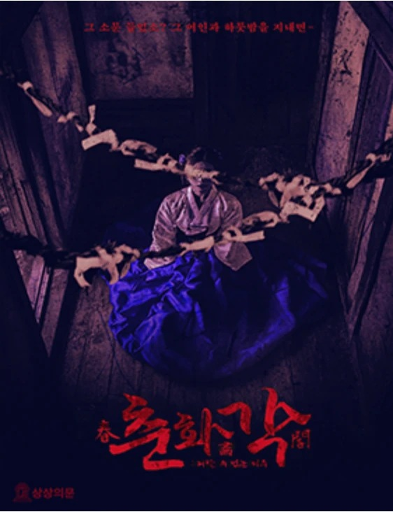

그 소문 들었어?
그 여인과 하룻밤을 지내면…
자네도 장원 급제를 위해서
이 춘화각을 찾았는가?
이쪽 끝방으로
들어가시게.
춘화각
피할 수 없는 저주
상상의문 수원 2호점
공포 · 난이도 3/5 · 공포도 4/5
직원 NPC와 함께하는 테마(매장 공식 안내)

포스터: 상상의문 공식
다녀왔다면
후기 남기기
줄거리·후기는 프로필 링크 · talkkaknote.com